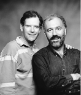

Imagine you're working on a program than runs on both Macintosh and Windows
computers. Suppose you aren't the only programmer working on the project, and you
occasionally want to work from home. Seems like a pretty common situation.
Soon everyone begins to make their own changes to the program and you realize that
you need some kind of source code control. When people think of source code control,
they often picture a safe database that keeps a history of every change to the project.
Most source control systems do a reasonable job of that. But what surprisingly few
people worry about is the much greater need to merge each programmer's changes into
the common code base. For some reason this is where many popular source code control
systems fall flat; here we'll tell you about one that doesn't.
Many systems require that you check out a file before modifying it. This is so that two
people don't modify the same file at the same time. Unfortunately, this makes global
changes difficult. Something as simple as changing a routine name from doQMFX to
PrintFile doesn't get done because you need to check out every file and someone else
already has them checked out; it's just not worth the hassle. In the early stages of
development, when everyone is changing many files at the same time, the
check-in/check-out model can slow you down even more. Some systems let a file be
checked out by several people, who must then merge their changes into a single file.
Even with the best tools, this process of merging often requires you to look at every
individual change, presumably so that you can verify each one. But you typically end
up incorporating every change anyway. Why not save a lot of time and headaches by
automating this process completely?
There are other annoying problems with some source code control systems, such as
limited cross-platform support and difficult or impossible access to the database from
home. And with some systems that use a database, you can't do simple things like grep
through your files. These problems can really get in the way of getting your work done.
If after reading this far you say, "Yeah, I hate source code control. I wish I just had a
bunch of files and didn't have to think about other people stepping on my files," then
read on. If instead you say, "I don't get what he's talking about. I don't mind checking
files out and back in and merging them by hand," then skip to the next article.
Still with us? Great. To avoid these problems, we at Eclectus have developed three
tools based on the GNU diff utility: Merge, Difference, and Undifference. They
accompany this column on this issue's CD and develop's Web site. Here's an overview
of how our scheme works:
Suppose I want to bring some work home with me. I use Difference to create a
difference script of changes between the current version -- say, HotApp-1 -- and my
local working copy. This difference script is usually small enough to put on a floppy
disk or beam over a modem. At home, where I also have a copy of HotApp-1, I use
Undifference to restore the working copy of my project. I can copy my changes made at
home back to work the same way.
If I want a copy of the source for safekeeping, I either copy HotApp-1 from the shared
server or, if I really care about space, I difference HotApp-1 against HotApp-0 and
compress the result, which is tiny.
If the machine I'm working on doesn't get backed up automatically every day, I can use
the same method to back up my work. I just difference my working copy against the
most recent shared copy, compress it, and put it in a safe place -- like on a server
that's backed up automatically. Compressed daily difference files are so small that I
can keep a year's worth in only about 20 MB.
Because these tools are based on GNU diff, they're free (thanks to the Free Software
Foundation), the source code is available, and they're extraordinarily fast. Using
Difference, Undifference, and Merge is approximately as fast as copying an equivalent
number of files. We can do a complete n-way merge -- a merge between n
programmers -- in less time than it used to take to check out just a few files with
competitive alternatives. We can difference or undifference our project (about 4 MB
of source) in less than one minute on a low-end Power Macintosh or a Windows NT
computer, and merge two trees in less than two minutes.
Because the source is freely available, you can easily tweak the tools to add your
favorite features. Of course you'll have to share those features with everyone else, but
that just makes the tools better.
At Eclectus, our current project is a program that runs on both the Mac OS and
Windows platforms, each developed at a different location. Let's say Alan and John are
each modifying their own copy of HotApp-0.
Development continues, and we repeat this process whenever we feel it's time to merge
again. We usually use a modem or e-mail to exchange the diffs, since they're small.
This process generalizes to more than two programmers since the merge utility will
handle any number of modified versions. Deciding when to merge is up to all the
programmers. We usually merge when somebody wants to make their changes
available to everyone else and nobody has totally broken their version. Sometimes
months pass between merges, sometimes we merge twice a day. Near the end of a
development cycle we like to merge at least once a day so that a recent copy is always
available for testing.
Automatic merging, tiny diffs files, no time-consuming file checkout? Sounds great,
but there are a lot of details you're probably wondering about.
What do the merges look like?
To merge changes, we use a command-line environment (MPW, ToolServer, and so
on). In the above example, we would use the following Macintosh command to merge
changes:
merge :HotApp-0 :HotApp-John :HotApp-Alan :HotApp-1
In this example, HotApp-0 is a directory tree containing the original code that both
John and Alan started with. HotApp-John is a directory tree containing John's version
after his changes, and HotApp-Alan contains Alan's version. HotApp-1 will contain the
result of the merge when the command is finished. If we had more programmers, we'd
just include their directories after Alan's. (With several programmers, you might
think that the time involved in sending complete source trees back and forth would be
prohibitive, but remember that the only thing that needs to be sent is a small diffs
file, and then the source tree can be rebuilt quickly and locally.)
When conflicts occur in the merge, the conflicting files are renamed by prefixing an
exclamation point (!) to the filename, and the conflicting lines of code are marked in
the merged file. Usually conflicts are solved by editing the merged file and taking one
person's changes. After conflicts are resolved, you rename the file back to its original
name.
Are automatic merges really safe?
Many programmers are suspicious of automatic merges. What if Joe makes a change
that's incompatible with Helen's, but they don't change the same line? Merge doesn't
identify this snafu. To avoid or identify bugs caused by incompatible changes, Joe and
Helen must talk to each other or look at all their changes. If you're so inclined, you can
give Merge an option that will list all the changes everyone has made so that you can
review them individually. Even so, after seeing automatic merges being used for over
10 years in lots of different projects with lots of programmers, we've found that the
time saved and the elimination of human error from manual merges more than
compensates for rare cases of incompatible changes. Of course, as you near the
shipping date, it makes sense to have every change to the project carefully
code-reviewed.
Can I rename a file?
Yes, as long as you do it right after a merge, when there's only a single copy of the
source tree; otherwise Merge treats renamed files as new and they won't get properly
merged with the previous source. But since Merge identifies files that were added or
deleted from each person's source tree, it's easy to detect these situations.
What happens to junk files?
Imagine you created some temporary file named Junk. Merge lists this file as a newly
created file found in your source tree. If you like, these tools can also ignore certain
files based on their filename extension. We like to put all our derived files, like object
files, in a subdirectory named Derived.i and have Merge, Difference, and Undifference
ignore files and directories that end in ".i". Just edit a table in the source code to define
which extensions you want to ignore.
What happens if I rearrange a lot of code?
If two or more people modify the same routine and one of them moves the routine to a
new place, Merge won't be able to merge the changes automatically. This case is treated
the same as if two or more people modified the same line: you have to look at the
changes and sort them out by hand. We often delay rearranging a lot of code until after
a merge, but before we distribute the merged version.
How do you pick up someone's bug fix?
If someone has a fix to a bug that they're not ready to merge, but it's holding up your
work, you can just copy their code containing the fix and put it in your project. Merge
doesn't treat this as a conflict even though more than one person changed the code,
because their changes were identical.
What about binary files?
Merge automatically handles one person changing a binary file, but not more than one.
In the latter case you must merge by hand. For this reason, we try to keep as much of
our project as possible in text rather than binary files.
Does this really work with more than two programmers?
T/Maker successfully used our tools for a number of years while developing WriteNow
For Macintosh with five programmers. Various companies with many programmers
working on multiple projects have been using successive automatic two-way merges
for years.
What about cross-platform support?
Merge, Difference, and Undifference are written in C and currently run on the Mac OS
(MPW with CodeWarrior 10 tools and libraries), Windows NT or 95 (Microsoft
Visual C++ 4.0), and NeXT (GNU C). If you need to support a new platform, these tools
should be easy to port as long as your platform has an ANSI C compiler. Some special
issues arise when working on cross-platform projects. Let's suppose I have all the
code for a Macintosh project and I want to move it to Windows NT or 95.
We continue to develop as before, except we each have a separate copy of HotApp-0 on
our respective platforms, rather than a shared copy on a single server. If I were to
share a single server from both platforms, I would have two separate directory trees,
one for each platform, each with the correct end-of-line characters. This would let
you use tools like grep in each platform to search through the files in the project.
When you need to synchronize the two source trees, you'll convert one of them to the
other platform for the merge.
If you work on two different platforms at the same time, you could make a separate
copy on each platform and treat each one as if it were owned by a different
programmer.
Better yet, if you use CodeWarrior or BBEdit for editing on the Macintosh, the
end-of-line problem goes away completely and you can keep just one source tree for
both platforms.
What do you do with resource forks on a Macintosh?
When you use Undifference and Merge on a Macintosh, they take the resource fork for
the new file from the original directory tree -- that is, HotApp-0 in the above
example. This means that after a merge, any changes you made to the resource fork
since the last merge must be made by hand. However, once it's in a directory tree that
everyone copies -- HotApp-1 in the example -- the resource fork will automatically
be propagated to new versions by Undifference and Merge. When you use Undifference
and Merge on other platforms to incorporate changes from a Macintosh, resource forks
are ignored. This means that you need to store any resources that you regularly edit in
a text file and use a resource compiler like Rez.
What about changes to date and time?
Undifference preserves the date and time of a file in a new modified directory tree
when there were no changes to the file. This means that you can iterate through many
merge cycles and files that weren't changed will still have the same dates and times.
What about non-ASCII characters?
The Mac OS, Windows, and UNIXreg. platforms differ in their interpretation of
characters outside the 7-bit ASCII range. These characters are usually not a problem
when they're in a file used on only one platform. However, when one of these
characters occurs in a file used on more than one platform, it's often a bug. Difference
and Undifference identify files that contain non-ASCII characters to help detect this
potential problem.
What about long filenames?
When developing on more than one platform, you're limited to the lowest common
denominator filename length and path length, since the same file must have the same
name on all platforms.
What about change comments?
The tools don't require you to add change comments. If you want them, you must
manually add them when you edit your code.
What is the Free Software Foundation?
These tools exist because of the Free Software Foundation. They provide the source code
to many useful programs, including the GNU utilities upon which these tools were
based. (GNU is short for "GNU's Not UNIX.") Note that any modifications to their code
must be made freely available under the same terms. You can contact them via e-mail
at gnu@prep.ai.mit.edu.
These tools grew out of our frustration with existing source code control systems.
After using them for many years, we've found them to be indispensable to our
development. They've served us well because they're simple, fast, and easy to adapt to
new situations. We hope that you'll enjoy using them as much as we do -- and if you
don't, perhaps you'll improve them.
D. JOHN ANDERSON (jander@c2.org) and Alan are Eclectus Software. Together they
write cross-platform applications for Windows and the Mac OS. Someday they plan to
rule the consumer applications market. John lives in La Honda, California, where he
writes software outdoors in a large tent with its very own ISDN line. At other times
you might see him running or bicycling through the redwoods. His latest hobby,
casting molds from faces, was inspired by the video "Better One-Piece Head Molds
From Life."*
ALAN B. HARPER (aharper@dnai.com) learned recursive descent from John 15
years ago. His latest accomplishment is a fast cross-platform persistent object store
-- which means he can now write programs without worrying about serialization,
undo, byte order, garbage collection, or running out of memory. In his off hours, Alan
can be seen with other volunteers of the Golden Gate Raptor Observatory following
radio-tagged hawks as they migrate through California.*
Thanks to Helen Casabona, Pete Gontier, Andy Jeffrey, and Tim Maroney for
reviewing this column.*
develop welcomes guest columns on a variety of subjects. Please submit your column
draft or idea to develop@apple.com.